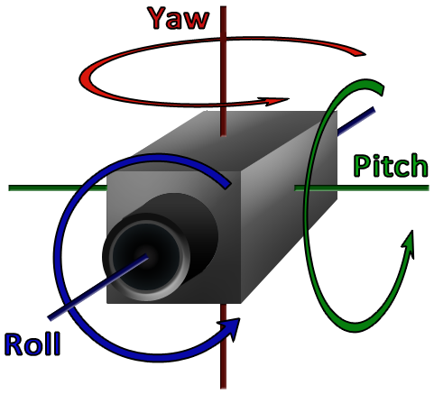

|
'Tis the season
Recreation of Christmas eve
|
|
'Tis the season
Recreation of Christmas eve
|
We have changed the camera view and implemented functions like
Yaw, Pitch, Roll, Pan and Zoom
We used the function gluLookAt() to and used the parameters lke
x, y, z for the postition of camera lx, ly, lz for the direction of camera and ux, uy, upz for up direction of camera and the angle pitchangle to change the
The yawing function is linked to the mouse. See processMouseMovement().
In this when we move the mouse
we are changing the x and z direction of the camera by an angle relative
to the distance of the cursor from the center of the window.
In this we have linked the buttons z and x to rolling movement. See processNormalKeys(). We are changing the roll angle using trigonometric functions The roll angle is varied by a constant every time the buttons are pressed.
In this we have linked the pageup and pagedown button to the pitch function. See processSpecialKeys().
We are changing the pitch angle we are translating the world coordinate origin to the camera and rotating the world coordinate space
by pitch angle and finally translating the world back to the original position.
For 3D modeling in computer graphics, panning means moving parallel to the current view plane.
In other words, the camera moves perpendicular to the direction it is pointed.
In this we have linked the d and a button to the pan function. See processNormalKeys().
We are changing the x and z of the camera for panning.
Zooming is a transformation used in computer graphics The transformation effectively scales down or blows up a pixel map or a portion of it with the instructions from the user We have linked the W and S button to zooming in and out.See processNormalKeys().
In this function we are moving the camera for zooming.
